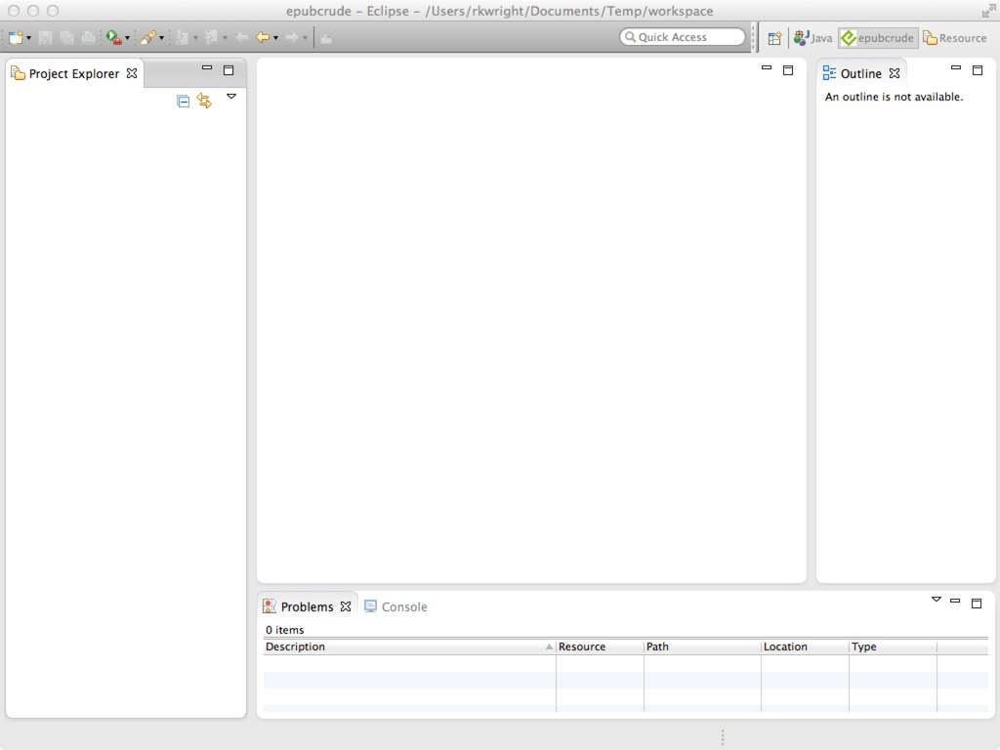
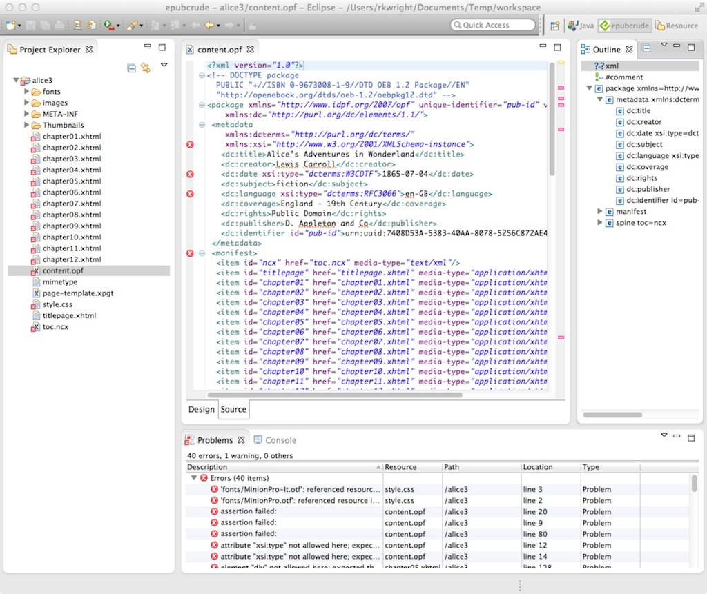

epubcrude
Overview
epubcrude is an Eclipse plugin and perspective that allows users to create, replace, update, delete and edit EPUB files. epubcrude uses the IDPF epubchecker 3.0.1 to validate the files. Note that epubcrude is NOT a WYSIWYG editor. The Readium Core doesn't underly it oranything like it. To see what an EPUB looks like after creation or editing, you'll need to open it in a compliant EPUB Reader. I'll look into making this easier in the future, but for now it's just an easy way to check for errors and problems in your EPUB files and then fix them.
Note: Many thanks to the excellent engineers who wrote EPUBCheck, including
- Peter Sorotokin
- Garth Conboy
- Markus Gylling
- Piotr Kula
- Paul Norton
- Jessica Hekman
- Liza Daly
- George Bina
- Bogdan Iordache
- Romain Deltour
- Thomas Ledoux
- Tobias Fischer
Building the plugin
The epubcrude project is hosted on github. The project can be found at gitub here.
To build, run, debug etc. the plugin yourself:
- clone the project from the github repo
- import the two Eclipse projects into Eclipse (tested with Eclipse 3.7 and 4.4 - should work in others back to Eclipse 3.5 but not tested. Eclipse 4.4 is recommended since the older version's updater is sometimes a little flaky)
- launch a new configuration as the workbench
- follow the instructions below in "Using epubcrude"
Installing the plugin
If you don't want to build the plugin yourself, then you need to install it. Installation is through the standard Eclipse Update Manager. The procedure is as follows:
- Install Eclipse if you haven't already. The current version is Eclipse 4.4 (Luna). Install the standard version.
- Note: When you first start Eclipse it will prompt you for a "workspace". This is essentially a folder where Eclipse keeps all your projects and associated assets. You can put it pretty much anywhere. Eclipse will offer to put it in your Documents folder. Personally, I prefer to create workspace that is specific to the project I happen to be working on - you can have as many workspaces as you want. But it's a personal choice.
- Once Eclipse is installed, you should install the XML tools if you haven't already:
- Go to the Eclipse Help menu and select the item "Install New Software..."
- Select the dropdown and one entry should be "Kepler - http://download.eclipse.org/releases/kepler". Select that. If you have an older version of Eclipse the name and version number will be different - that's OK.
- You'll see "Pending..." for a bit then a whole slew of choices will appear. Scroll way down to " Web, XML, Java EE and OSGi Enterprise Development " Open that then scroll down to " Eclipse XML Editors and Tools". Select that then choose "Next".
- If there are problems Eclipse will tell you about them - shouldn't be (FLW). Choose Next again then agree to the terms of the License.
- Now choose Finish and Eclipse will chew away, downloading and installing everything
- You will be prompted to re-start Eclipse. Do that.
- Now you can install epubcrude itself:
- Go back to the Help menu and choose "Install New Software..." again.
- This time, choose the button that says "Add..." which presents the "New Update Site" dialog
- In the name field, enter something reasonable like "epubcrude Update Site"
- In the web address field, enter http://www.geofx.com/epubcrude
- Press OK and Eclipse should show "Pending" for a moment, then an entry which says "Uncategorized" (this mis-labeling appears to be an Eclipse bug. If you choose the twisty you'll see the only entry is "epubcrude". Click either of the boxes to select epubcrude.
- Again, press "Next". There should be no errors, so press "Next" again, agree to the license terms (the standard Eclipse license) then Finish.
- epubcrude should then be downloaded and installed. Again, you'll be prompted to re-start Eclipse, do so.
- That's it. Now you can start using epubcrude.
Using epubcrude
Using epubcrude is pretty easy, though there are some quirks (and no doubt a slew of bugs I haven't found). There will eventually be several ways to use it, but at present there is really just one way:
- Switch to the epubcrude perspective by selecting Window/Open Perspective/Other...
- One of the choices will be "epubcrude" with the little EPUB logo. Choose that one.
- Eclipse will then arrange the various windows to look like this:

- Either from the File menu or by right-clicking in the project window and selectin New/Other.
- There will be an entry for epubcrude. Open the twisty and select that entry then press Next
- You will be prompted to name your project. Give it some reasonable name (if it conflicts with an existing project, Eclipse will complain). Press Next
- Here there will eventually be several choices (import existing EPUB, import exploded EPUB, import raw HTML, create new EPUB) but right now you only have one choice, so just press Next.
- Now import the EPUB you would like work with.
- What happens next is that epubcrude opens the EPUB file, extracts all the contents into a folder under the name of the project in your workspace folder, then creates a new copy of the EPUB in that same folder.
- So in the current version, your original isn't touched but a new copy is created
- Eclipse will then show you a view like this:

- Note that the contents of the file are shown in the project tree on the left. You can open any of the files by simply double-clicking on it.
- When you open a file, the contents will be shown in the main (tabbed) window. An "outline" (a navigable tree) will be shown in the right-most window.
- At the bottom is the "Problems" tab, where all the warnings and errors (and exceptions) found by EPUB check will be shown.
- As you can see in the image above "Alice" has a slew of them
- You can navigate to each of these problems or warnings by double-clicking in the probelms window. Note that the same markers are shown in the project view on the left.
- When you double-click, Eclipse will open that file and navigate to that location. If you hover over the error or warning, a popup will appear with the same info as in the problems pane.
- If you then go ahead and edit the file and fix the problem, Eclipse will
- detect that you have made that change
- rebuild the EPUB file
- re-run EPUBCheck and update all the warnings and errors - hopefully without the one you thought you just fixed...
- A couple of tips:
- Eclipse will show all the problems for ALL open projects, so it may sometimes be convenient to "Close" all problems with problems except the one you are working on
- Once you have fixed all the problems you'll have to go find the "Fixed" EPUB and copy it to wherever. epubcrude should help you there - another pending feature.
If you find any problems or have suggestions, feel free to send them to me directly (rkwright@geofx.com)or enter an issue on the github site.
I should be making periodic updates to epubcrude to fix bugs, add new features, etc. To get the new new features depends on whether you cloned the repo or just installed the plugin. If you cloned the plugin, just pull from the repo.